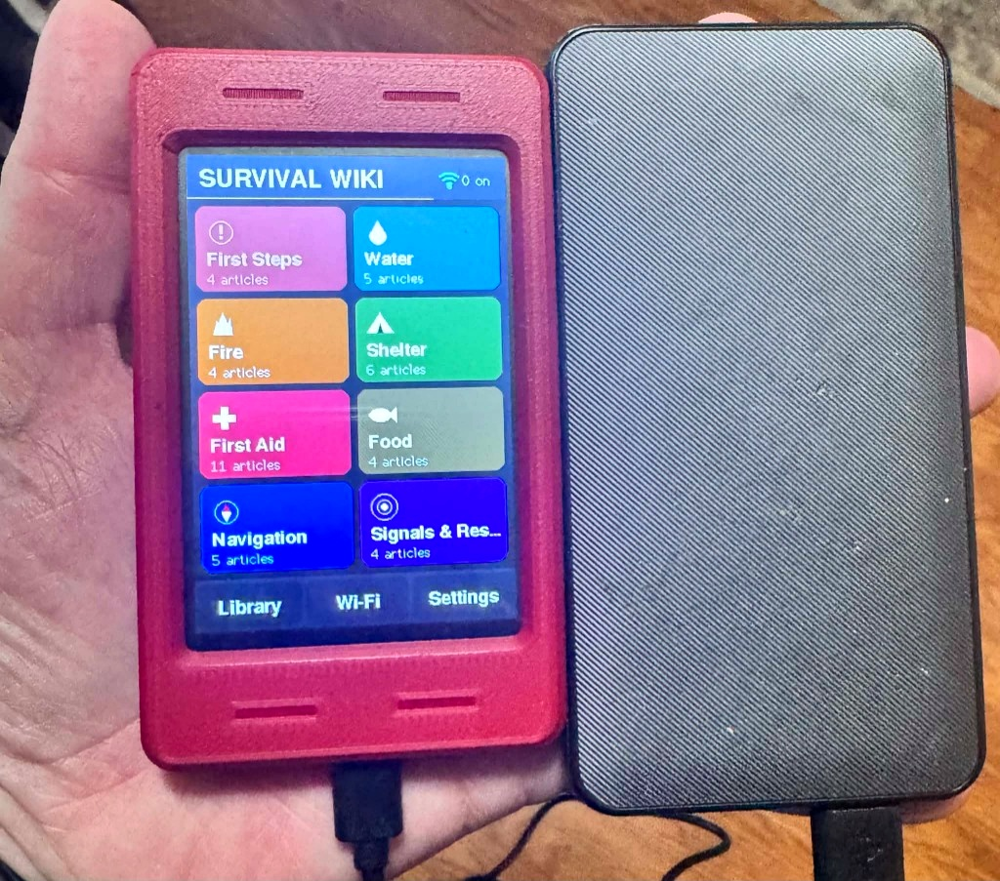
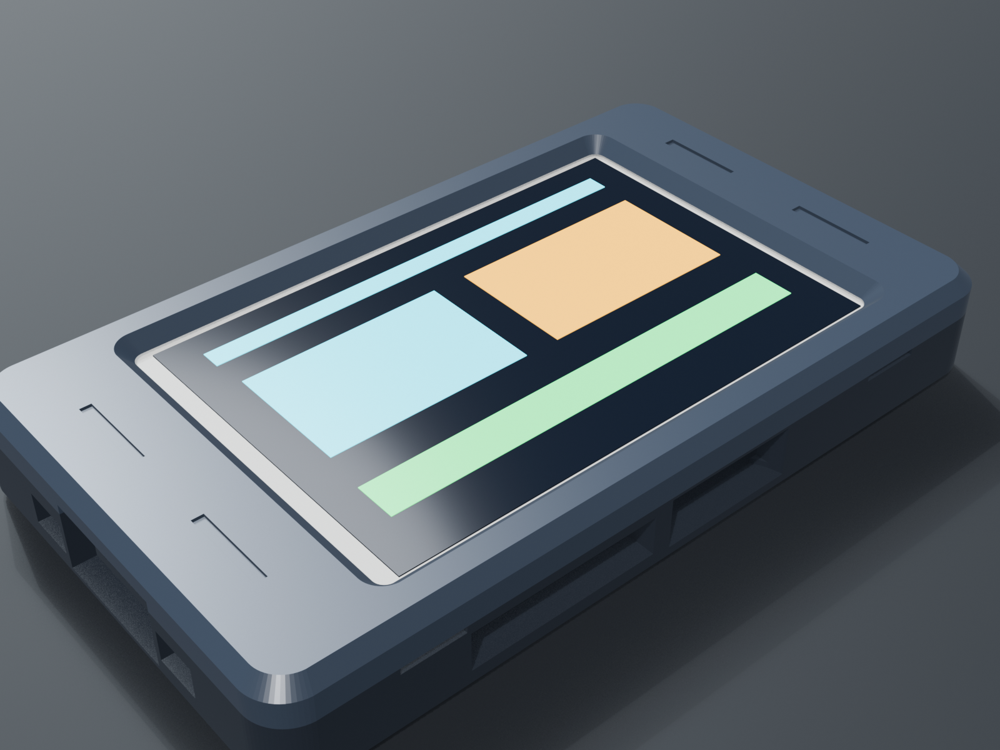

An offline field guide for cheap ESP32 touchscreen boards. No signal, no subscription, no problem. Flash it from your browser in about a minute.

Same guides, better board. These are in the 2.8" firmware now, and the 3.5" build gets them next.
Pick your board, plug it in, click Install. No drivers and no software. It needs Chrome or Edge.
Target: Hosyond 3.5" 320x480 ESP32-32E touchscreen board (Amazon B0D93MBWC2, model E32R35T with centered USB-C).
Full 320×480 resolution, ST7796 driver, 8-tile emergency dashboard, and a centered USB-C port for battery banks.
The image holds the bootloader, partition table and full firmware, written at offset 0x0.
Click Install and choose your USB port. Tick Erase device. It writes in about 40 seconds.
Format a microSD card as FAT32 and copy everything in the sdcard/ folder to the root of the card.
Tap the markers when asked, and you are in. Tap Wi-Fi to get the QR code for your phone.
Straight off the 2.8" CYD, with real screenshots captured from the device.
Everything the wiki reads lives on a plain FAT32 card.
Copy everything inside sdcard/ to the root of the card (cards up to 32 GB format as FAT32 out of the box).
Two-piece snap-fit cases for both screens. No supports, no screws, no glue.
Both halves print flat on the plate, with the bezel face-down on textured PEI. You get flush USB cutouts, a thumb scoop for the microSD card and angled vents to keep the ESP32 cool during long hotspot sessions. Files are in the repo under case/ (3MF, STL and Blender).

sdcard/ contents to the root.